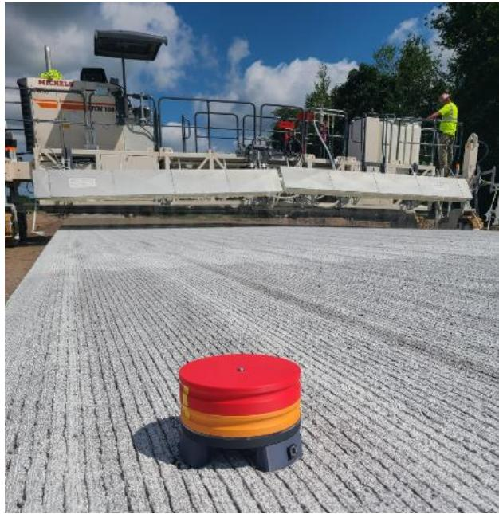

Concrete Cracking
Concrete cracking is the formation of fractures within hardened cement paste or concrete when internal tensile stresses exceed the material’s limited tensile strength. These tensile stresses primarily arise from volumetric changes such as drying shrinkage, autogenous shrinkage, and thermal expansion or contraction, which are often exacerbated by external restraints like subgrade support or imposed loads [1] [3]. Additional mechanisms contributing to cracking include thermal incompatibility between aggregate and matrix, freeze-thaw cycles, chemical expansive reactions, and mechanical actions such as traffic shear or curling [2]. The resulting fractures provide pathways for moisture and aggressive chemicals, accelerating further deterioration of the pavement structure [2].
Sources (3)
Key findings
- Properly spaced contraction joints provide intentional planes of weakness that control crack location and limit the number of random cracks [1] [3].
- Sawing must occur within a specific strength-based window to ensure cuts fully activate as cracks without causing early raveling or missing the opportunity for controlled cracking [2] [3].
- Concrete cracking fundamentally results from tensile stresses generated by restrained moisture or temperature-induced volume changes exceeding the material’s low tensile capacity [1].
- Early-age cracking prevalence increases because concrete stiffness rises faster than strength, causing shrinkage and thermal contraction to produce higher internal stresses during this period [1].
- Uniform and continuous base support serves as a primary preventive measure against cracking by avoiding the high bending stresses associated with loss of support [1].
- Improperly executed sawing introduces micro-cracks that weaken joints and can lead to water-filled reservoirs if cuts fail to crack through the base [2].
- Effective curing lengthens the joint-sawing window, thereby lowering the chance of uncontrolled concrete cracking by allowing more time for optimal cut timing [3].
- Mix-design actions that reduce volume change, such as using low paste content and coarse aggregates with low shrinkage, further lower the risk of cracking [1].
Concrete Cracking Mechanisms and Mitigation Strategies
Concrete cracking occurs when internal tensile stresses exceed the material’s low tensile strength, leading to fracture formation [1] [2]. These stresses primarily arise from volume changes due to drying shrinkage and thermal expansion or contraction, which are often restrained by subgrade support or external loads [1] [3]. Mitigation strategies focus on managing these stresses through proper curing to control moisture loss and temperature gradients, as well as designing contraction joints to provide predetermined weak planes for controlled crack initiation [1] [3].
The figure below illustrates a specific type of distress known as D-cracking.
 D-cracking in concrete pavement near joints. [1]
D-cracking in concrete pavement near joints. [1]
The image displays a concrete surface featuring a prominent longitudinal crack that intersects with transverse joints, creating a cross-shaped pattern of deterioration. Extensive map cracking radiates outward from the central joint intersection and along the longitudinal seam, accompanied by dark staining indicative of moisture presence within the fractures. This damage is identified as D-cracking, which occurs due to expansive freezing of water in calcareous aggregate particles and typically starts near joints to form a characteristic D-shaped crack.
Research problem — Research must address how early-age stresses and environmental mechanisms drive joint-related cracking, spalling, and material loss in concrete pavements [2]. There is a need to understand the distinct failure modes of corner, longitudinal, curling, and D-cracking as critical indicators of structural deficiency and durability loss [1]. Investigation is required into how deviations from prescribed saw-cutting windows lead to uncontrolled cracking that undermines the intended crack control and load transfer capabilities of contraction joints [3].
The figure below illustrates corner cracking in jointed concrete pavement.
 Corner cracking in jointed concrete pavement [1]
Corner cracking in jointed concrete pavement [1]
The image displays a section of rigid pavement where distinct transverse and longitudinal joints divide the surface into rectangular slabs. A prominent fracture pattern, identified as corner cracking, is visible at the intersection of these joints on the left side of the frame. This type of distress represents a structural failure where internal tensile stresses exceed the material’s strength, often exacerbated by reduced edge support and voids under slab corners.
State of the art — The current consensus defines concrete cracking as a predictable response to restrained volume changes, such as drying shrinkage and thermal contraction, which occur when early-age tensile stresses exceed the material’s low capacity [1]. State-of-the-art mitigation integrates mix design optimization with rigorous moisture and temperature management to delay stress development until sufficient strength is attained [1]. Jointing strategies rely on precise timing within the sawing window, supported by advanced predictive tools like P-wave propagation devices and maturity monitoring to ensure cuts occur before uncontrolled cracking initiates [2] [3].
The following figure illustrates how effective curing practices extend the optimal timing for joint sawing.
 The impact of good curing on the joint sawing window (after ACPA 2011). [3]
The impact of good curing on the joint sawing window (after ACPA 2011). [3]
The figure plots concrete strength and internal stress against time to define a ‘Sawing Window’ where cutting is optimal. The diagram shows that effective curing extends this window by accelerating strength development while delaying stress accumulation, thereby mitigating the risk of early-age fracture.
Findings from the reports
- Sawing must occur within a specific strength-based window and achieve full depth activation to prevent random cracking, water-filled reservoirs, and subsequent freeze-thaw damage at the joint base [2] [3].
- Concrete cracking is fundamentally caused by tensile stresses from restrained moisture or temperature-induced volume changes exceeding the material’s low tensile capacity, a risk amplified when stiffness rises faster than strength during early age [1].
- The HIPERPAV computer model effectively forecasts early-age drying-shrinkage cracking by comparing predicted stresses to allowable limits, demonstrating high accuracy in predicting crack formation timing across multiple sites [1].
- Properly spaced contraction joints serve as the principal control strategy for limiting both the number and location of cracks by providing intentional planes of weakness where shrinkage and thermal stresses are directed [1].
- Effective curing extends the joint-sawing window, thereby lowering the probability of uncontrolled cracking by allowing sufficient time for concrete to gain strength before sawing [3].
- Uniform and continuous base support is critical for preventing high bending stresses that lead to cracking, as loss of support significantly increases structural vulnerability under load [1].
- Mix-design modifications such as using low paste content, modest water-to-cement ratios, and aggregates with low shrinkage coefficients reduce volume changes and lower overall crack risk [1].
- D-cracking resulting from freeze-thaw cycles in susceptible aggregates is mitigated by selecting non-susceptible aggregate, reducing maximum particle size, and ensuring adequate drainage [1].
Novelty & rigor — The research introduces a mechanistic framework that elevates drying shrinkage and thermal expansion to explicit design inputs, enabling the optimization of slab thickness and joint spacing through predictive software models [1]. A distinctive contribution is the operationalization of a condition-specific sawing window that shifts activation from generic strength estimates to real-time indicators derived from acoustic emission monitoring and wave speed measurements [2] [3]. The methodology incorporates material innovations such as internal curing aggregates and nucleation sites to diminish weak zones, supported by the integration of embedded resistivity sensors and maturity values for precise timing control [1] [3].
Reported values
| Parameter | Value | Context | Source |
|---|---|---|---|
| autogenous shrinkage threshold | 0.40 w/cm ratio | concrete w/cm ratio where autogenous shrinkage becomes important | [1] |
| compressive strength for sawing | 300 to 1,015 lb/in2 | concrete compressive strengths where raveling was within acceptable limits | [1] |
| cracking risk period | first 24 hours | concrete volume change and cracking risk | [1] |
| evaporation rate threshold | 0.2 lb/ft2/hr | evaporation rate requiring effective curing application | [1] |
| longitudinal joint spacing | 10 to 13 ft | typical longitudinal joint spacing | [1] |
| paste content limit | 25 percent by volume | concrete paste content recommendation (AASHTO PP 84) | [1] |
| slab thickness limit | 9 in. | slab thickness requiring width limitation without longitudinal joint | [1] |
| slab width limit | 12 ft | maximum slab width for slabs 9 in. thick or less without longitudinal joint | [1] |
| slipform paving w/cm limit | 0.38 | recommended maximum w/cm ratio for slipform paving | [1] |
| transverse joint spacing | 15 ft | typical maximum transverse joint spacing for unreinforced pavement | [1] |
| crack distance from joint wall | 4 to 6 in. | concrete cracking caused by fluid saturation and classic freeze-thaw | [2] |
Across the reviewed reports, concrete cracking is fundamentally driven by tensile stresses from restrained volume changes exceeding material capacity, a process that can be forecasted using computational models comparing predicted stresses to allowable limits. Mitigation strategies converge on the necessity of precise jointing within an optimal sawing window, which is influenced by curing practices and mix design parameters such as paste content and aggregate selection to control shrinkage and thermal expansion. Improper execution of jointing or inadequate base support introduces high bending stresses that lead to random cracking or structural deterioration, whereas proper depth and timing promote controlled failure at intended contraction joints. [1] [2] [3]
The following figure illustrates specific joint configurations employed in airport concrete pavements to manage these stresses.
 Joint details used in airport concrete pavements (FAA 2021). [3]
Joint details used in airport concrete pavements (FAA 2021). [3]
The figure displays cross-sectional diagrams of various joint types, including contraction joints with tie bars and dowels, construction joints, and isolation joints. These details illustrate the physical mechanisms used to manage internal tensile stresses caused by volumetric changes such as drying shrinkage and thermal expansion or contraction.
Implications — Designers must ensure uniform edge support, adequate slab thickness, and proper drainage to prevent corner cracks caused by structural deficiencies [1]. Mix designs should prioritize low shrinkage characteristics and early strength development to counteract thermal and volume change stresses before the concrete gains sufficient tensile capacity [1]. Contractors must implement rigorous quality control measures, including real-time monitoring of temperature and maturity, to identify the precise sawing window for joint activation [3]. Strict adherence to proper blade selection, operating parameters, and timely cutting is essential to avoid bruising or micro-cracking that compromises joint performance [2].
The following figure illustrates practical methods to determine the optimal opening time for joint sawing.

Methods to determine the opening time for joint sawing. [3]The image displays a construction site where a large paver is laying fresh concrete pavement, with a worker visible in the background. This equipment supports the identification of the sawing window, which is critical because missing this timing allows random cracking to occur along or adjacent to saw cuts.
Limitations — Conclusions regarding concrete cracking are constrained by specific design assumptions, such as uniform base conditions and realistic traffic forecasts, which if unmet significantly increase the risk of corner cracks [1]. The effectiveness of mitigation strategies like sawed contraction joints is limited by a narrow timing window that varies with mix composition and environmental factors, making proper execution difficult under extreme conditions [1] [3]. Predictive tools for early-age cracking are restricted to the first seventy-two hours of curing and have only been validated for specific testing conditions, limiting their broader applicability [1].
Evidence: 3 reports (3 primary)
Related concepts
In this hierarchy
- Parent: Cracking Mitigation
- Sibling: Moisture Management
- Sibling: Sealant Application
- Sibling: Temperature Management
Related by shared evidence
- Aggregate Management — shares 3 reports
- Cement Chemistry — shares 3 reports
- Cementitious Materials — shares 3 reports
- Concrete Mixture Design — shares 3 reports
- Concrete Production — shares 3 reports
- Concrete Strength — shares 3 reports
- Concrete Testing — shares 3 reports
- Cracking Mitigation — shares 3 reports
Similar topics
- Cracking Mitigation
- Joint Sealing
- Pavement Types
- Moisture Management
- Maturity Methods
- Joint Maintenance
- Design Considerations
- Pavement Design
Source coverage
| Source | Concrete Cracking Mechanisms and Mitigation Strategies |
|---|---|
| [1] | ✓ |
| [2] | ✓ |
| [3] | ✓ |
References
- Integrated Materials and Construction Practices for Concrete Pavement: A STATE-OF-THE-PRACTICE MANUAL (2019)
- Guide to the Prevention and Restoration of Early Joint Deterioration inConcrete Pavements (2016)
- Best Practices Manual: Quality Control and Quality Acceptance of Concrete Airport Pavement (2025)
Feedback on this page